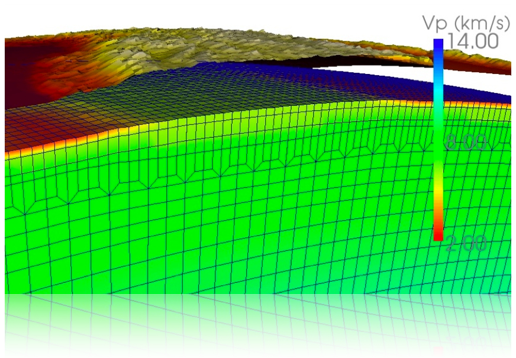

3D wave propagation

Simulating seismic wave propagation in 3D is quite a challenge, especially
in complex geological settings. To make things easier from a numerical
perspective, I helped enhancing the global scale package
SPECFEM3D_GLOBE "Tiger"
and also helped implementing a more flexible local scale package
SPECFEM3D "Sesame"
of the already excellent basin package. The new "Sesame" version is more flexible
when it comes to meshing your model. It also handles acoustic and elastic
materials. And if you want to mix them together, it automatically takes
the coupling between acoustic and elastic waves into account.
As an illustration case, the movie below shows this coupling in a daily
life example.
Movie
A simulation of acoustic and elastic waves traveling through a coffee cup.
The source is inside the fluid, i.e. the coffee, and a simplest acoustic pressure source.
Acoustic waves couple at the cup's surface with the elastic part of the cup
and continue propagating as elastic waves. The interesting fact here is that
for local to regional scale simulations of seismic waves propagating through Earth,
we use exactly the same physical principles.
references:
Peter, D.,D. Komatitsch, Y. Luo, R. Martin, N. Le Goff, E. Casarotti, P. Le Loher, F. Magnoni, Q. Liu, C. Blitz, T. Nissen-Meyer, P. Basini and J. Tromp, 2011. Forward and adjoint simulations of seismic wave propagation on fully unstructured hexahedral meshes , Geophys. J. Int., 186 (2), 721-739.